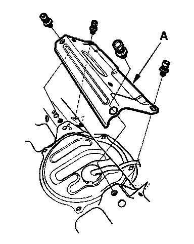
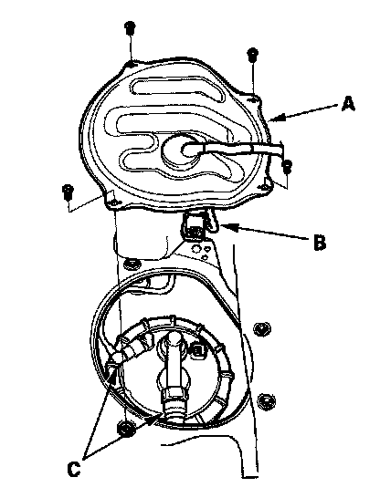
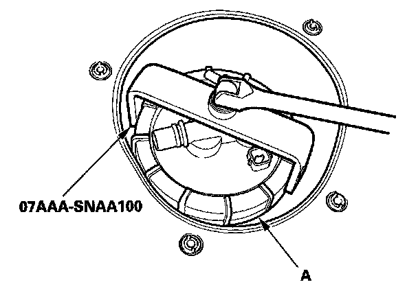
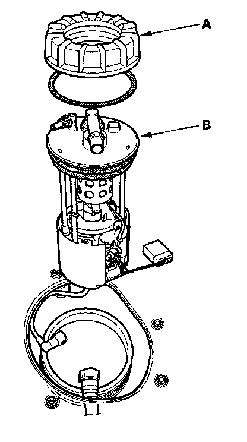
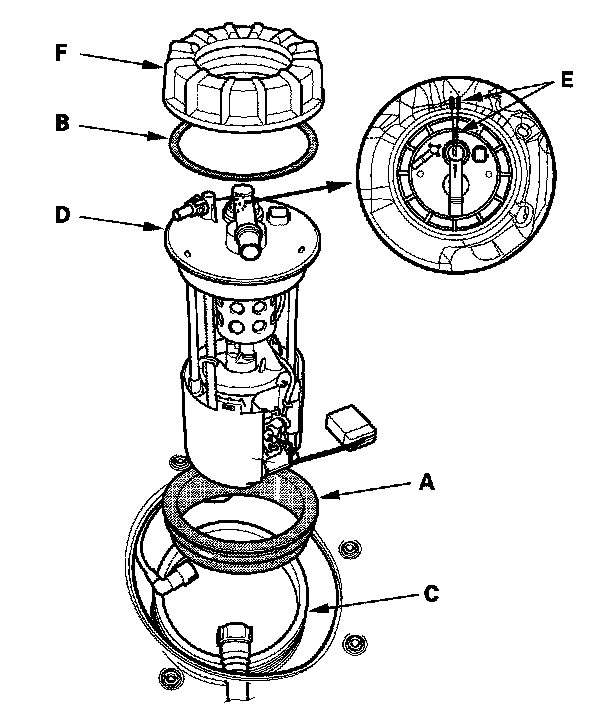
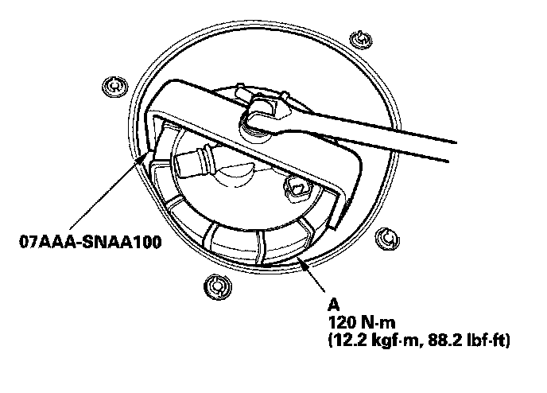

Fuel Tank Unit Removal/Installation
Fuel Tank Unit Removal/InstallationSpecial Tools Required
Fuel pump module locknut wrench 07AAA-SNAA100
REMOVAL
1. Relieve the fuel pressure.
2. Remove the fuel fill cap.
3. Remove the rear seat cushion.

4. Remove the rear floor upper cross-member (A).

5. Remove the access panel (A) from the floor.
6. Disconnect the fuel tank unit 4P connector (B).
7. Disconnect the quick-connect fittings (C) from the fuel tank unit.

8. Using the special tool, loosen the locknut (A).

9. Remove the locknut (A) and the fuel tank unit (B).
INSTALLATION

1. Install a new base gasket (A), and locknut plate (B) to the fuel tank (C).
2. Insert the fuel tank unit (D) into the fuel tank. Be careful not to bend the fuel gauge sending unit.
3. Align the marks (E) on the fuel tank and the fuel tank unit, then tighten a new locknut (F) by hand.
NOTE:
- After tightening, make sure the marks are aligned. Check the circumference of the base gasket visually or by hand and be sure that the gasket is not pinched.
- Do not coat the base gasket or the locknut plate with oil.

4. Using the tool, tighten the fuel tank unit locknut (A).
NOTE: After installation, check the base gasket visually or by hand to be sure the gasket is not pinched.